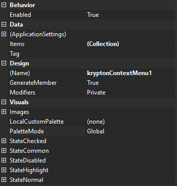
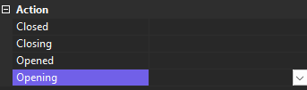

KryptonContextMenu
Use the KryptonContextMenu component instead of the ContextMenuStrip for displaying context menus to the end user. The Krypton implementation has several advantages over the ContextMenuStrip version. It has additional functionality available on the menu entries, such as the ability to have split buttons. It has additional types of menu entry, such as the header menu item. It also allows for more complex column arrangements.
Implementation
Note that the KryptonContextMenu is not just a customized version of the ContextMenuStrip. It is written as an entirely new component so you will not be able to convert to using the Krypton version by just renaming your existing context menu instances. Nor can you add ToolStrip menu instances to the Krypton implementation.
KryptonContextMenu properties
Figure 1 shows the list of properties exposed by the KryptonContextMenu component.

Figure 1 - KryptonContextMenu properties
Enabled
This property does not prevent the context menu from being displayed but it does force all the menu items to be disabled even thought the items themselves are not individually disabled. This Enabled state is used to determine if the displayed context menu uses the enabled or disabled border and background for the entire context menu area.
Items
A collection that contains the top level set of context menu items.
Tag
Use the Tag to assign your application specific information with the component instance.
Images
Most aspects of the appearance are specified via the set of state properties but there are some elements of the context menu that use images. This compound properties allows you to override the default images that are inherited from the associated palette. Examples of the images it provides are the Checked and Indeterminate pictures used in the image column for a menu item that has a checked state defined.
Palette and PaletteMode
By default your component will use the globally defined palette. If you need to alter this so that a fixed builtin palette is specified then update the PaletteMode property directly. If you need to specify a KryptonPalette instance then assign it to the Palette property.
StateChecked, StateCommon, StateDisabled, StateHighlight and StateNormal
In order to customize the appearance you need to update the appropriate state properties. Not all elements of the appearance use all of the different possible states, so examine all the different states to discover which are appropriate for the element of interest. The intention of the context menu is that the appearance does not change whilst it is already displayed, so attempting to alter state properties will not update immediately as you might be expecting.
KryptonContextMenu methods
There are only two methods that you need to be aware of in order to use the KryptonContextMenu effectively.
Show
Use the Show method to display the context menu. There are several different overrides for the method that allow various ways of specifying the screen location of the menu.
Close
Call Close to remove the context menu from display. This method has no effect if the menu is not currently being displayed.
KryptonContextMenu events
There are four events exposed by the KryptonContextMenu component as seen in figure 3.

Figure 3 - KryptonContextMenu events
Closed
Generated when the context menu has been removed from display. This event is useful when you need to perform cleanup once the context menu has been dismissed. Note that the event provides information about the reason for the close occurring, so you can take alternative action depending on the cause the menu close.
Closing
Occurs when the context menu is requesting that it be removed from the display. This can occur because the user has clicked on one of the menu options. You can prevent the close from occuring by setting the Cancel property of the event arguments to False. Event data will contain an enumeration that indicates the reason for the close occuring. So you can decide if the close should be allowed depending on the reason. Note that it is possible for the context menu to be removed without the generation of the Closing event. In that case you will receive only the Closed event.
Opened
Fired when the context menu has been displayed.
Opening
Generated when the context menu is about to be displayed but before the Items collection has been processed. This event has a Cancel property so you can prevent the menu from being displayed. This is the appropriate event to use for updating the Items collection of entries so that it reflects accurately your application state. This prevents the need to constantly update menu item state during normal operation when the context menu is not being shown.
Menu items
There are several different types that can be used inside the context menu Items hierarchy. However, not all of them are valid at all locations in the hierarchy. At the top level you cannot place an individual KryptonContextMenuItem but instead must place them inside of an KryptonContextMenuItems collection instead. This extra hierarchy level allows for greater display flexibility because the collection of items can be modified as a group. For example, you can specify that a group of items be displayed without the image column having the traditional background displayed.
The list of items that can be placed at the root Items level is as follows...
- KryptonContextMenuCheckBox
- KryptonContextMenuCheckButton
- KryptonContextMenuColorColumns
- KryptonContextMenuHeader
- KryptonContextMenuImageSelect
- KryptonContextMenuItems
- KryptonContextMenuItem
- KryptonContextMenuLinkLabel
- KryptonContextMenuMonthCalendar
- KryptonContextMenuRadioButton
- KryptonContextMenuSeparator
The list of items that can be placed inside a KryptonContextMenuItems is as follows...